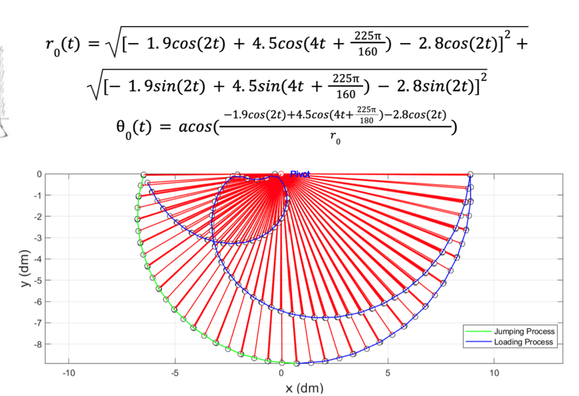
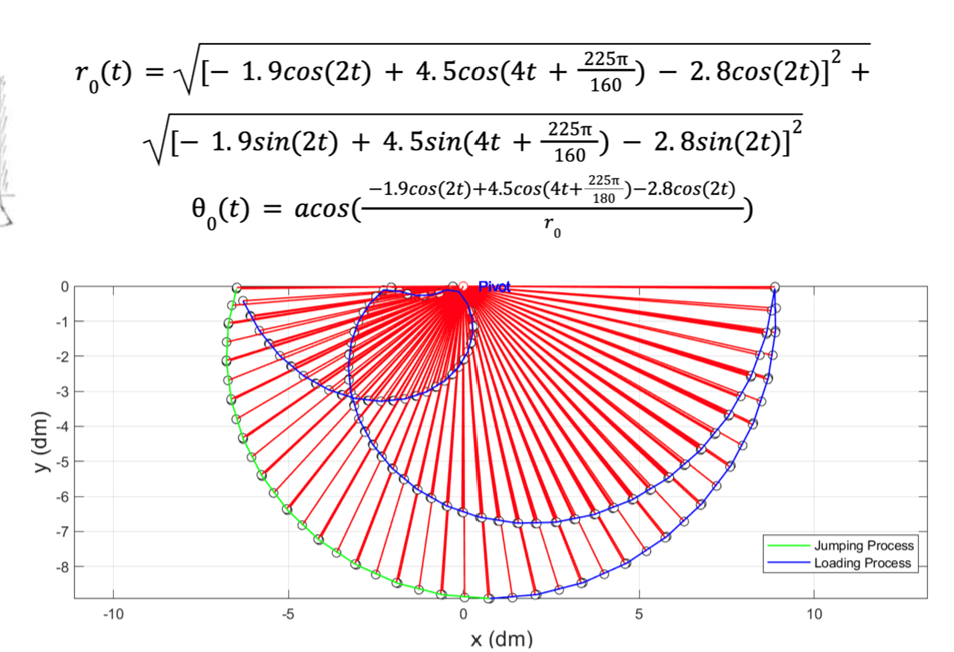

Project Overview
This project explored the feasibility of a jumping rescue robot capable of traversing vertical obstacles in disaster environments. Drawing on prior research in spring-assisted legged locomotion, we designed and refined a modular leg mechanism for high-energy jumps. Using kinematic analysis, force modeling, and simulation tools, the system was evaluated for jump height, landing stability, and potential applications in rubble traversal. The design demonstrated the theoretical capability of achieving 2 m vertical jumps, providing a foundation for future prototyping and testing
 

My Contributions
-
I focused on adapting and improving existing jumping leg designs, optimizing the spring–linkage configuration for energy efficiency, and conducting MATLAB-based simulations to predict system performance. I also analyzed landing dynamics and stability trade-offs, proposing control strategies for future implementation.
Technologies
Tools: Solidworks · MATLAB/Simulink · Kinematic modeling · Dynamic Simulation
What I Learned
This project helped me gain experience in evaluating prior robotics research, adapting designs for new use cases, and applying theoretical analysis to predict real-world performance. I learned to balance energy efficiency, stability, and mechanical feasibility in designing legged locomotion systems intended for rescue scenarios.